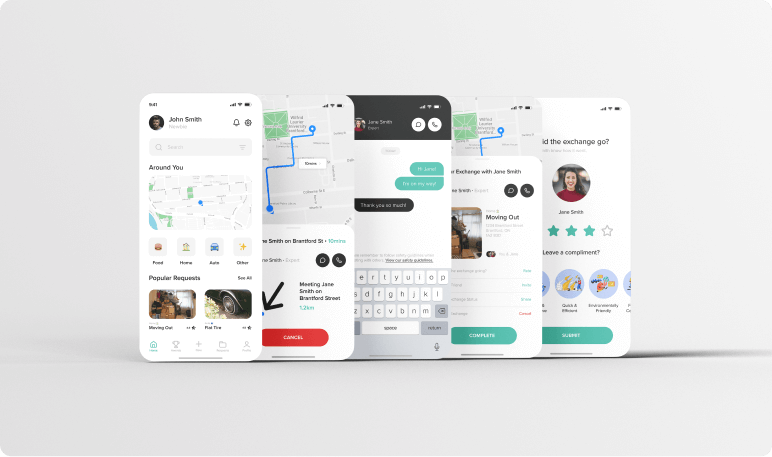

Needless
2018
Needless was a project completed during my time at Wilfrid Laurier University. The product focuses on usability and inclusivity.
Brantford is home to many things- The telephone, Wayne Gretzky, and unfortunately a higher rate of homelessness. This is why we were approached by the Needless team to create a product that bridges the gap and unifies the community of Brantford to solve the homeless crisis. By investigating Needless’ initial research, we were able to determine that hunger was a crucial factor in the homeless crisis. Using this information, we sought out to create a user friendly product that would connect the community with the homeless and allow users to donate food and non-perishables.
Now that we had identified the core problem, it was time to find a solution. We tapped into the Brantford homeless community through user interviews and observations, and found some interesting information that left us at a crossroads. We spoke to community leaders inside the fight to end homelessness and hunger in Brantford, and learned how hard it is to keep track of the homeless. Because they do not have phones or computers, they are not able to access the internet to get help. Furthermore, we also learned that members of the homeless community are very reluctant in receiving help, and would rather “lay low.”
This information was confirmed when we spoke to members of the homeless community- Many of them did not have access to a phone or computer, with some not even knowing what the internet was. With this is mind, we had to make a key decision that would change the product direction of the product.
With the information learned from our initial research, we concluded that digital food exchange product would not be possible, and instead pivoted to the idea of creating an exchange app that would enable people in the community to give and receive food and services through a friendly transaction.
We looked at popular exchange services such as Kijiji and Facebook Marketplace to gather a thorough understanding into the services industry. While this investigation was critical, we wanted to create something that differed from these products, and offered a new way to exchange and receive food and services.
The key question when building the final designs was, “How can we create a digital services exchange app that is not only inclusive and safe for users, but also encourages users to give back to the community?” We accomplished this question through three key components: Vetting, Rating and Gamification.
Vetting - In order to create a safe space to give and receive services, we need to ensure that users are properly vetted. To do this, we require users to verify themselves when signing up using either a verified Facebook account, or a picture of a verified piece of Photo ID.
Rating System - To expand on the safety and security of those who use the Needless app, how are we able to ensure transaction are safe and users who break the terms and conditions are barred from the platform? To do this, we created a rating system that allows users to rate others. This not only helps keep the Needless community safe, but it also helps us identify users that do not belong on the platform.
Gamification - Finally, how might we encourage users to give back to the community? It might be easy for users to sign up and request food or services, but why should they give back? This is why we instated a weekly leaderboard system that allows users to compete with each other to earn cash prizes. Users collect points and badges after every successful transaction, which adds to their weekly total. At the end of the week, the top three are awarded with cash and other select prizes.
Recently, I spent some time revisiting Needless. I always enjoy looking back on past projects not only as a learning experience, but also to see what you would do differently with your current knowledge.
I practiced my design skills, completely rebuilding the app from scratch, utilizing components and variations inside of Figma to facilitate the design process.
This time around, I focused heavily on the onboarding and sign up process. I also broke down the exchange experience further to improve how users locate each other.
As you can probably see, I took inspiration from both Tinder and Uber. I really enjoy Tinder’s onboarding process- It’s broken down to one input per screen to reduce cognitive load. As for Uber, I borrowed from the trip experience and added my own twist- Since users won’t be meeting in a vehicle, I realized it might be difficult to locate each other. To remedy this issue, I included device tracking into the exchange experience to help users locate each other.
All in all, it was a great experience (pardon the pun) revisiting Needless and applying my current knowledge to the project!